- 3.1.1
- Elle est publiée dans un « annuaire ».
- 3.1.2
- 40513010914391514220514201801141925122201140905
- 3.1.3
- Cherie, je taime.
- 3.2.1
-
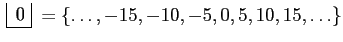
,
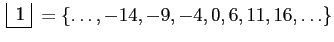
,
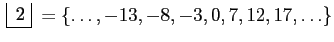
,
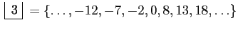
et
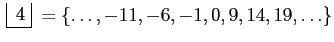
.
- 3.2.2
- Il faut montrer que
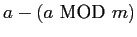
est divisible par  .
Par le théorème fondamentale de la division, on sait qu'il existe
.
Par le théorème fondamentale de la division, on sait qu'il existe
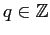
tel que
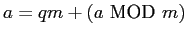
. Mais alors,
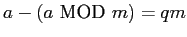
est clairement divisible par
.
Donc,
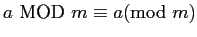
.
- 3.2.3
- Cela suit immédiatement de la définition de classe d'équivalence.
- 3.2.4
- Comme
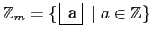
, il est clair que
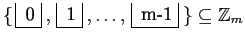
. Soit maintenant
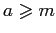
. Alors, il existe
et
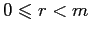
tels que 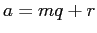
.
Ainsi, 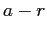
est un multiple de
et donc
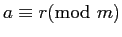
. En vertu de l'exercice
3.2.3, on en déduit que
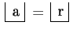
.
Donc,
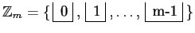
.
- 3.2.5
- Si
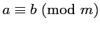
, on a que
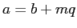
pour un
.
De même, si
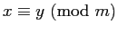
, on a que
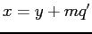
pour un
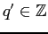
.
Alors,
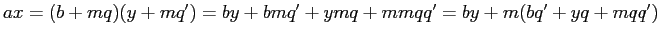
. Ainsi,
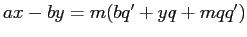
. Donc,
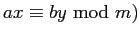
.
- 3.2.6
- Il faut montrer que si
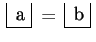
et que
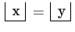
,
alors
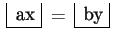
. En vertu de l'exercice 3.2.3,
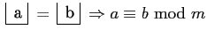
. De même,
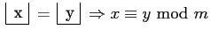
. Il suit de l'exercice 3.2.5 que
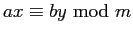
. Mais
alors,
, ce qu'il fallait démontrer.
- 3.2.7
- Soient
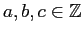
. On veut montrer que
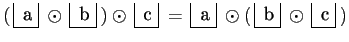
.
On a
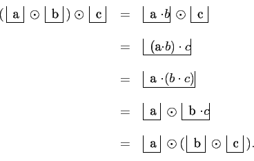
Donc, la multiplication est associative.
De plus,
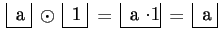
et
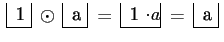
. Donc,
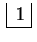
est l'élément neutre.
Ainsi,
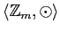
est un monoïde.
- 3.2.8
- On a
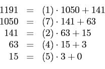
Donc,
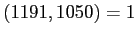
.
Il reste à déterminer
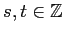
tels que
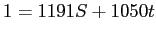
.
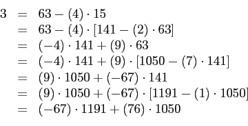
Donc,
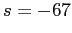
et 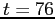
.
- 3.2.9
- L'implication
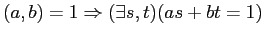
est triviale, puisque c'est précisement la relation
de Bezout lorsque 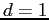
.
Supposons maintenant qu'il existe des entiers  et
et  tels que
tels que
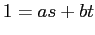
. On veut montrer que
.
Premièrement, 1 est clairement un diviseur à la fois de  et de
et de
 . Il reste à montrer que c'est le plus grand. Soit
tel que
et
. Alors,
pour tout
et
pour tout
. Ainsi,
, c'est-à-dire que
. Mais alors,
, ce qui prouve que 1 est le plus
grand commun deiviseur de
et de
.
. Il reste à montrer que c'est le plus grand. Soit
tel que
et
. Alors,
pour tout
et
pour tout
. Ainsi,
, c'est-à-dire que
. Mais alors,
, ce qui prouve que 1 est le plus
grand commun deiviseur de
et de
.
- 3.2.10
-
- Supposons que
.
En vertu du théorème de Bezout, il existe
tels que
. Ainsi,
d'où
puisque
.
-
- Supposons qu'il existe un
entier
tel que
. Alors,
.
Ainsi,
est inversible dans
et son inverse est
.
-
- Supposons que
possède un inverse dans le monoïde
.
Soit
cet inverse. Alors,
d'où
. Ainsi,
. Comme
, on a que
pour tout
et alors
. En vertu
de la réciproque du théorème de Bezout, on a que
.
- 3.2.12
- Ce sont les éléments
de
pour lesquels
. Ainsi, les éléments
inversibles de
sont
,
,
et
.
- 3.2.13
- Si
 est premier et que
est premier et que
 tel que
, on a que
. Comme il y a
tels entiers,
on a que
compte
éléments inversibles.
tel que
, on a que
. Comme il y a
tels entiers,
on a que
compte
éléments inversibles.
- 3.2.14
- Supposons au contraire qu'il existe un nombre fini
de nombres premiers. Soient
tous les nombres
premiers. Considérons
. Alors,
n'est
divisible par aucun des nombres premiers. En effet,
pour tout
. Comme cette division n'est pas exacte, on en
conclut que
n'est divisible par aucun des
 (
). Donc,
est un nouveau nombre premier, ce
qui est une contradiction au fait que
étaient tous les nombres premiers.
(
). Donc,
est un nouveau nombre premier, ce
qui est une contradiction au fait que
étaient tous les nombres premiers.
Donc, il y a une infinité de nombres premiers.
- 3.2.16
-
- 3.2.17
-
- 3.2.18
- a)
- Ce sont
et
.
- b)
- Il y en a
.
- c)
-
- 3.2.19
- Prenons
pour un nombre premier
. En vertu de l'exercice 3.2.17, on sait que
. Il suffit alors de remplacer dans le théorème d'Euler
par
et
par
pour obtenir le petit théorème de Fermat.
- 3.3.1
- On peut diviser
pat tout entier compris entre
et
jusqu'à ce qu'on trouve un diviseur de
auquel
cas il n'est pas premier ou jusqu'à ce qu'on ait épuisé la liste,
auquel cas
est premier. Cela requiert donc au pire
division, c'est-à-dire
divisions, ce qui est énorme. Au rythme d'un
milliard de divisions à la seconde, cela représenterait
approximativement
années ou encore
fois l'âge de l'univers (estimé à 13,7 milliards
d'années).
- 3.3.3
- Comme
est l'exposant qu'il faut donner à
pour obtenir
 , cette égalité est vraie.
, cette égalité est vraie.
- 3.3.4
- On a
,
,
,
,
,
, puisque
 et
, puisque
et
.
et
, puisque
et
.
- 3.3.5
-
. Ainsi,
et
.
- 3.3.6
- On a vu que le nombre d'opérations maximal avant que
l'algorithme d'Euclide ne prenne fin est de l'ordre de
. Si on prend
, on a
. Il faudra donc au plus 600 divisions
avant que l'algorithme ne prenne fin. Sous l'hypothèse que
l'ordinateur peut faire un milliard d'opérations à la seconde,
cela ne prendrait que 6 dix-millionnième de seconde, ce qui est ma
foi très raisonnable! L'algorithme d'Euclide est donc une
excellente méthode pour calculer le pgcd de deux nombres, mêmes
très grands.
- 3.3.7
- Pour exprimer un nombre en binaire, il faut
déterminer la plus grande puissance de deux qui est inférieur au
nombre. Soustraire cette puissance du nombre, déterminer`la plus
grande puissance de deux qui entre dans ce nouveau résultat et
continuer jusqu'à ce qu'on ait la décomposition du nombre en somme
de puissances de deux. C'est donc équivalent.
- 3.3.8
- Il suffit d'utiliser la loi des exposants qui dit que
.
- 3.3.9
- On utilise le fait que
.
- 3.3.10
- On a que
Donc,
et
sont congrus modulo
.
Comme ils sont tous deux dans
, on en
conclut qu'ils sont égaux.
- 3.3.11
-
Comme
, on peut construire le tableau
Donc,
Donc,
, ce qui aurait pu
tout aussi bien être démontré en utilisant le théorème d'Euler,
puisque
.
- 3.3.12
- L'écart moyen entre deux nombres premiers
consécutifs situés entre 2 et
est de l'ordre de
.
L'écart moyen entre deux nombres premiers consécutifs situés entre
2 et
est de l'ordre de
.
Entre
et
, il y a approximativement
nombres premiers. Or,
Comme il y a
nombre entre
et
, on en déduit que l'écart moyen entre deux nombres
premiers consécutifs situés autour de
est de l'ordre de
Comme on ne teste qu'un nombre sur deux (on ne teste pas les
nombre pairs), cela revient à tester, grosso modo,
nombres. C'est tout à fait raisonnable.
- 3.3.13
- On sait que le nombre d'essais à faire lorsqu'on
veut trouver un nombre premier de l,ordre de
est au plus de
l'ordre de
. Si
est de l'ordre de
, alors on aura besoin d'au plus
opérations.
- 3.3.14
- a)
- On a
Donc,
.
- b)
-
Donc,
et
.
- c)
- On a vu qu'il faut approximativement
opérations pour calculer le pgcd de
et de
. Ici, cela
représente
opérations. Pour calculer les
entiers
et
tels que
, cela nécessite
essentiellement le même nombre d'étapes. C'est donc très
pratique.
- d)
- Pour chaque égalité (ligne) de l'algorithme
d'Euclide, il faut isoler le reste, remplacer, puis
simplifier (une multiplication puis une addition). Cela représente donc
quatre opérations pour chacune des lignes de l'algorithme
d'Euclide. Ainsi, pour trouver
et
, il faut en général
étapes.
- e)
- Premièrement,
. Deuxièmement,
. Enfin,
.
À chaque fois, la somme donne  .
.
- f)
- Il suffit de prendre
où
est le plus petit entier supérieur ou égal à
.
- g)
- Si en appliquant l'algorithme d'Euclide on trouve un
nombre
négatif, alors il suffit de prendre à la place
et à la place de
, on prend
.